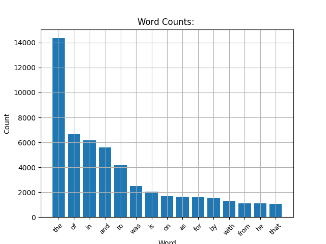
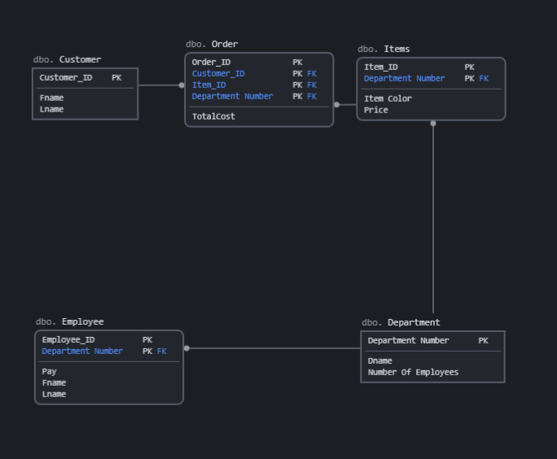

Data Parsing to Test Zipf's Distribution Law

Zipf's Law of Distribution governs an ordered set of pairs, (Element, Count of Appearances). The law stats that the number of times an element appears is inversely proportional to its rank in the set multiplied by the number of appearances of the first element, so the first element appears (1/1 * (Element1AppearanceCount)). The second element appears half as many times as the first, the third element appears a third as many as the first, and so on so forth. The generalized formula for the number of times an object appears on a set X is as follows:
X = {a,b | a is the elements rank, b is the number of appearances, b = 1/a * X(1)}.
Results of project: I ran the code above with N = 500, therefore it counted number of times each word appeared in 500 different articles and totaled them up in a dictionary. The data in this dictionary can be seen in the chart above. While this may resemble Zipf's distribution a bit, as it decreases in a negative logarithmic fashion, I wanted to know just how close it was to being exactly Zipf's distribution. So I took each element in the top 10, and calculated its fractional comparision to the count of the first element, and then compared that value to its inverse rank. I took the average of all these errors to determine that the average error in this list was only 14%, meaning that every value was approximately 14% away from its expected Zipf appearance rate. This shows that while not proven, Zipf's Law of Distribution is definitely correct, as uncanny of a law as it may seem.
ECommerce Site Connected With SQL Database through Python

This was an database project I constructed that was meant to mimic that of how an ECommerce site would work. I handled a Username and Password service, although they were not hashed or anything on that level. I also handled that of keeping track of stock, user orders, and other behind the scenes stuff most ECommerce sites handle. To achieve all of this I created a flask web-app connected to a html site, this flask app then spoke with the mySQL database I had set up in the background. The code isn't sourced below as when my harddrive died, all the code I wrote for this died with it. Some bit of code and other database documentation can be seen on the below document however. Last Updated (9/15/21).
PDF of project description docResults of project: A almost functional, albeit rudimentary ECommerce app connected to a mySQL database. I learned a lot about SQL, Flask, and how to connect applications to background programs through this project.
Computer Process Automation Using Python

Through this project I wanted to just test out creating a startup program for a windows pc. In effort to keep things simple, I just wanted to create a program that would save me the effort of going though and opening all of the applications I regularly open daily, so my browser and emails, or other programs like visual studio that I regularly work in. Project was an overall success, and I do use this program daily on startup. Source code below. Last Updated (5/20/21).
Results of project: I learned about how to tie startup programs to windows pc, and process automization. Sooner or later I am planning to make a program that automatically sorts through and deletes my spam emails for me, as clearing out emails myself daily is quite the hefty task, as no matter how much I unsubscribe, I continually still get spam. This project has definitely taught me some things that would help in that process of automating dull tasks.
Data Sorting Algorithms Visualized
This tool is useful for visualizing how different sorting algorithms work internally. This link will take you to itch so you can run the engine I used to render the shapes in, allowing you to easily access the tool. So far there are a few sorts to try, and you can edit some of the testing parameters. Last Updated (5/12/21)
Results of project: I learned various different sorting algorithms through this project, each with their own individual benefits. Some are very space and code efficient, while others sacrifice that for extreme speed. Through this project I also learned how Unity works, and how to create functional UI.
This Website!
Results of project: This websites source code can be just viewed through inspect element, if you interested in how I set it up. I learned a lot about HTML, CSS, PHP, and Javascript through this project. While I have also learned that web development tools are very useful, coding this entire site by hand was definitely worth the painstaking effort, as I learned many useful skills like how to make sure its functional on multiple screen sizes and platforms, and how to really expand the functionality of a singular web page, as github pages doesn't allow you to actually have more than one page. Last Updated (9/19/2021).
Programming Languages
C/C++ -4 years experience
C# -3 years experience
Python -2 years experience
Java -1 years experience
SQL -1 year experience
Javascript -1 years experience
HTML/CSS/PHP -1 years experience
Frameworks
Unity Engine -3 years experience
Unreal Engine -3 years experience
Node.js -1 years experience
Flask -1 years experience
mySQL -1 year experience
Skill Sets
OOP -4 years experience
Client / Server Architecture -2 years experience
Database Creation/Management -1 year experience
Machine Learning -1 year experience
Data Scraping -1 year experience
I am a senior dual majoring in Computer Science and Mathematics. I am looking for a chance to get experience working in these fields in order to cultivate my skills, and to demonstrate my willingness and capability to learn and adapt. I have many skills in mathematical and statistics oriented programming, like data science. I am also keenly interested in software design, as creating tools that simplify my life and the lives of others are very rewarding. I also would love to give a try to professional game design as working closely with a friend of mine I have been creating a 3D puzzle platformer in my free time with physics oriented gravity puzzles, and through working on this I have a new found respect for the games I play in my free time, as weaving together intricate classes, models, and creating state machines to handle different behaviors is quite the process and I would love to see how this is all handled at a professional level.